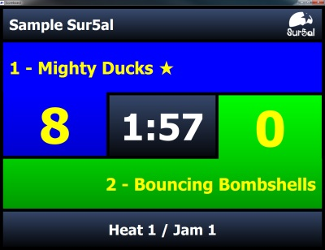
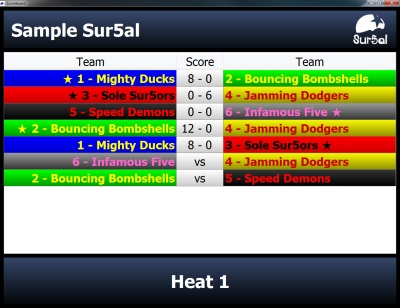
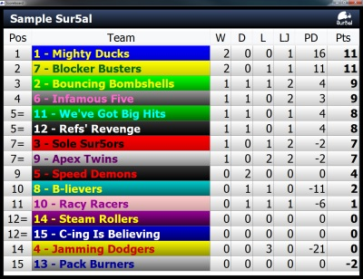

Scoreboard Window
Score5al's scoreboard window is designed to be displayed in full-screen mode on a dedicated display, such as a projector or large screen. It can display various kinds of information relevant to whatever is happening during the match. It doesn't have any interactive elements and is controlled using the controls in the main window.
Scoreboard modes
The scoreboard has three different modes, each of which displays different information. You can switch between the modes at any time using the buttons in the toolbar or in the 'Scoreboard' menu. Read on for a description of each mode.
Jam Mode
During a jam, the scoreboard window should be set to Jam Mode. In this mode, the scoreboard displays information about the jam which is currently selected in the Jams panel. The names of the teams involved in the jam are displayed along with their scores, using the team colours chosen in the Teams panel. Lead jammer status is shown by a star next to the team's name. The jam timer is shown in the centre; it will turn red when 10 seconds or less remain.

Score5al's scoreboard in Jam Mode
Schedule Mode
In Schedule Mode, the scoreboard will display the jam schedule for the heat which is currently selected in the Jams panel. If a jam has already been completed, the scores will be displayed instead of the "vs." text. This allows Schedule Mode to provide a summary of the results in a completed heat, or a preview of the running order in an uncompleted heat, or even both, in the case of an partially-completed heat.

Score5al's scoreboard in Schedule Mode
Table Mode
To display the overall match scores, place the scoreboard into Table Mode. This displays the match rankings in the style of a league table. The teams are ordered by their position in the match. The columns displayed are, from left to right: Rank, Team name/number, Wins, Draws, Losses, Led Jams, Points Difference (jam points scored minus jam points conceded), and overall Match Points. See the introduction for more information about match scoring.

Score5al's scoreboard in Table Mode
Using the Scoreboard Window
Score5al is designed to be used on a system with two screens, such as a laptop with a projector connected in addition to its inbuilt screen. The main window is displayed on one screen (e.g the laptop screen), while the scoreboard window is displayed on another (e.g. the projector).
To show the scoreboard window, select the desired mode (Jam, Schedule, or Table). You should then place the scoreboard window on the screen where you want to show it, and select the "Full Screen Mode" option from the main window's Scoreboard menu. Depending on your operating system and your graphics hardware, this may or may not actually take up the entire screen; it has been tested on Windows 7 and Solaris 11 and works as intended on these systems.
Hints and tips
If you accidentally hide the main window by placing the scoreboard window into full-screen mode on the wrong screen, you can disable full-screen mode by pressing the Escape key.
The scoreboard window has been designed to work on all standard computer display aspect ratios - 5:4, 4:3, 16:10, and 16:9 - at any screen resolution. Depending on the fonts used by your OS, your experience may differ. If you experience problems with truncated text in Schedule or Table mode, you can tweak the sizes of the table columns by resizing the table headers.
If you are not able to use Score5al in the intended setup with one system and two screens (for example, because your projector input is located in a different room), it is suggested that you use desktop-sharing software such as VNC or Remote Desktop to work around this.